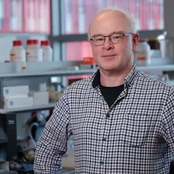
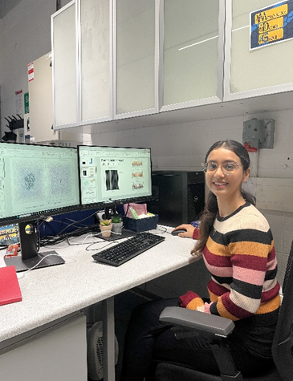
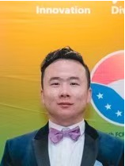
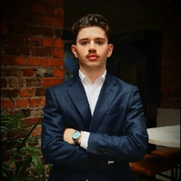
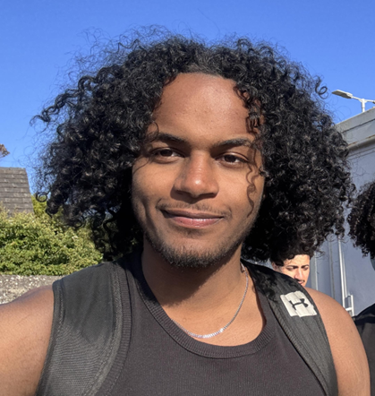
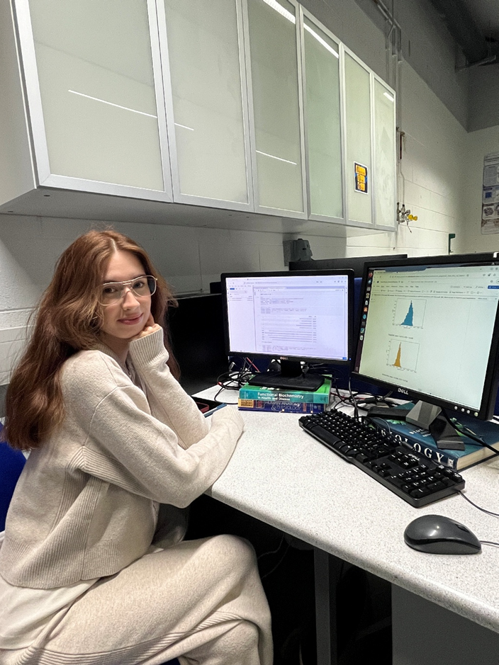
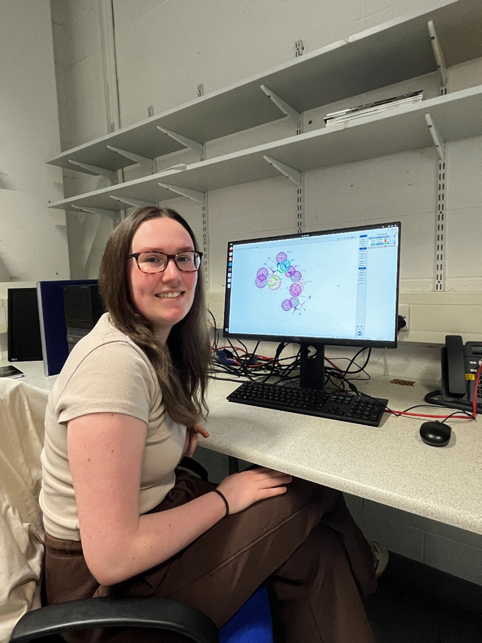
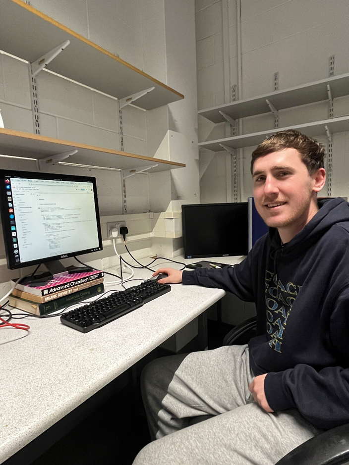
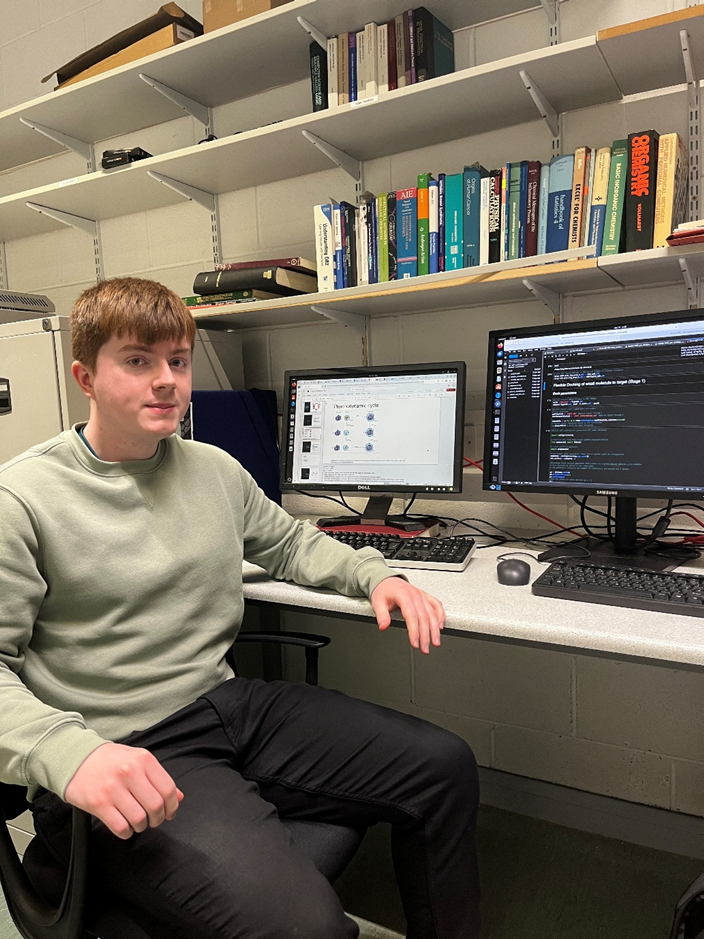

Group Members
Quick Navigation
Current Members

Darren Fayne
Principal Investigator
Background
Darren holds an honours degree in Applied Chemistry and PhD in computational and organic chemistry from Dublin City University. He has an M.Ed. in Higher Education from Trinity College Dublin. He worked for two years at Solvay Pharmaceuticals in Hannover, Germany as a molecular designer from March 2003. While with the Computer-Aided Drug Design Group he focused on two main therapeutic areas of research: cardiovascular disease and gastroenterology (IBS/IBD). In July 2005 Darren joined the Molecular Design Group in Trinity College Dublin as a Senior Research Fellow. In January 2024 Darren started a permanent position as an Assistant Professor (above bar) in Computational Chemistry in DCU.
Research Projects
Darren has lead a number of successful small molecule hit-finding research programmes against various protein targets including – androgen receptor (AR), farnesoid X receptor (FXR), peroxisome proliferating activated receptor gamma (PPARγ), glucocorticoid receptor (GR), estrogen receptor α and β (ER), tubulin, caspase 6, macrophage migration inhibitory factor (MIF), toll-like receptor 4/myeloid differentiation 2 (TLR4/MD2), plasmepsins, IL-17, Viral infectivity factor (Vif), Lipoprotein signal peptidase (LspA), cytochrome P450, SARS-CoV-2 nsp3, SARS-CoV-2 nsp13, along with novel compounds demonstrating in vivo efficacy against malignant pleural mesothelioma, lung cancer and sepsis.
Ivan Čmelo
Postdoctoral Researcher
Background
Ivan holds a Master's degree in Informatics and Chemistry from the University of Chemistry and Technology Prague (UCT Prague), and a PhD in cheminformatics from the same university. His doctoral work focused on the computational exploration of chemical space, including the development of algorithms for structure generation. His work also extended into virtual screening and synthetic accessibility estimation. Ivan has held research positions at the Czech Institute of Molecular Genetics and at the Department of Informatics and Chemistry at UCT Prague, where he has contributed to cheminformatics, forensic/data analysis and IT infrastructure development.
Research Projects
Ivan has contributed to multiple research projects spanning cheminformatics, computational drug design and chemical forensics. For his PhD, he created and screened a million-compound virtual library of potential steroid receptor ligands. He also developed the Feature Interrelation Profiling methodology for estimating compound properties based on mutual information and Kullback-Leibler divergence patterns between compound structural features in different datasets.
Media

Shubhangi Kandwal
4th-Year PhD Candidate in Biochemistry
Background
Shubhangi has completed bachelor's degree in pharmacy from Delhi Pharmaceutical Sciences and Research University, New Delhi, India, in 2019. She also graduated with M.Sc. degree in Molecular Medicine from Trinity College Dublin, Ireland, in 2020. During the master's degree, her thesis project, "Repurposing drugs for treatment of SARS-CoV-2 infection: computational design insights into mechanisms of action," was published as a research article in the Journal of Biomolecular Structure and Dynamics. In the year 2021, she was awarded the Government of Ireland Postgraduate Award by the Irish Research Council to pursue her PhD studies.
Research Project
Every virus present in nature has emerged from a common ancestral family. For example, viruses such as Zika, chikungunya, coronaviruses, the dengue virus, hepatitis viruses and more belong to a family of viruses called the Group-4 viruses. In my project, I have identified common features, i.e., common binding sites, that are present in related proteins among these viruses.
Personal Interests
Dancing, hiking, listening to music and travelling
Funding Sources
Irish Research Council (now known as Research Ireland) GOIPG/2021/954
Media

Chao Chen
Application Developer
Background
Chao obtained his bachelor's degree in a computer science-related field in China in 2009 and subsequently worked as a software engineer. Chao is currently employed as an application developer at Fiserv. In 2022, Chao began a part-time master's program at Dublin City University (DCU), and in 2024, he commenced his final project under the supervision of Assistant Professor Darren.
Research Project
Chao's research focuses on distributed graph algorithms, which are based on the principle of "thinking like a vertex." Currently, Chao is developing a distributed application for pharmacophore mapping, matching, and virtual screening.
Personal Interests
Chao is particularly interested in application of distributed graph processing, knowledge graphs, and graph neural networks.

Abdirahman Ali
PhD Candidate
Background
Abdirahman Ali holds an Honours degree in Chemical and Pharmaceutical Sciences, having graduated from Dublin City University in 2022. Following his undergraduate studies, he worked for two years as a chemist at Astellas Pharma Inc., where he gained extensive hands-on experience with key laboratory instrumentation and analytical techniques, including HPLC, Gas chromatography, UV-Vis spectroscopy, IR spectroscopy, and Karl Fischer titration.
Research Project
Motivated by a long-standing passion for computational chemistry, Abdirahman returned to academia and is currently pursuing a PhD under the supervision of Dr. Darren Fayne at Dublin City University. His doctoral research focuses with aid of computational drug design the investigation of potential small-molecule inhibitors targeting the androgen receptor (AR), a key protein implicated in the progression of prostate cancer.

Oisín Keating Mac Dermott
3rd Year INTRA Student
Background
Oisín is a 3rd Year Chemistry and Artificial Intelligence from Dublin. He is completing a research project with the Group as part of his course placement. Oisín has a background in emergency medical service and bartending.
Research Project
Oisín is currently developing two machine learning models to predict Distribution and Toxicity properties of small molecules as part of his work with the Molecular Design Group.
Personal Interests
Caving & Scuba diving
Fearghal Twomey
3rd Year INTRA Student
Background
Fearghal is a 3rd Year Chemistry student completing a research project with the Group as part of his course placement.

Amr Elmahi
Undergraduate Student Researcher/Intern
Background
I am a 2nd year undergraduate chemistry student visiting from Trinity College on a RISE placement. I have a strong interest in medicinal and pharmaceutical chemistry and aspire to work in the pharmaceutical industry.
Research Project
I am currently working on a project involving CADD (Computer Aided Drug Design) to design a dual inhibitor for TOP1 and PARP1 which would theoretically have anti-cancer properties.
Personal Interests
I have a keen interest in fitness and lift regularly and I am also interested in fashion and music.
Funding Sources
Royal Society of Chemistry/RISE
Media
Former Members

Alex Pegeeva
4th Year Project Student
2024-25

Aoife O'Neill
4th Year Project Student
2024-25

Cian Loughlin
4th Year Project Student
2024-25

Connor Barrett
4th Year Project Student
2024-25